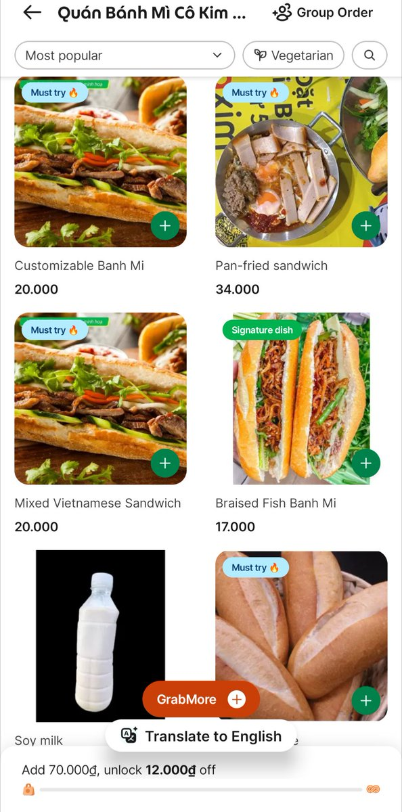

amber水母
@amber_medusozoa
@SnowfairySerina 确实好吃

✨🌈摇光星辰⭐深空金芒🏳️⚧️✨
@SnowfairySerina
可是，大姐，粽子好好吃的，我一想到蛋黄粽子就流口水...还有大闸蟹，你知道吗，有的时候蟹黄是满溢出来的...沾上醋，真是绝品...尤其还有，东坡肉啊，东坡肉！！我在越南都喜欢吃脆皮五花...要是那种汁水满满的...啊...我要打开Grab去点餐了...太好吃了...
你原来是要说什么的，我好像串台了（逃走 https://t.co/TFXnXiBoJO https://t.co/ksU6bjUHzA